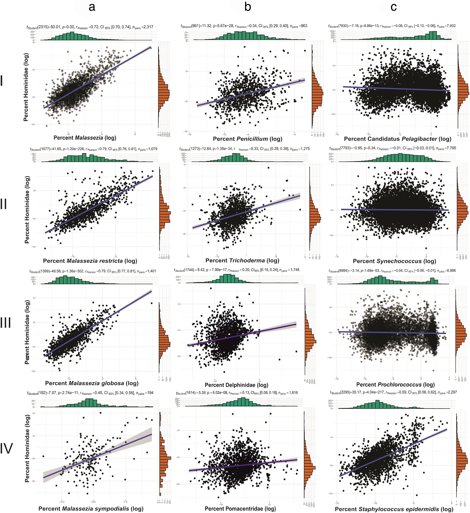

Large-scale metagenomic analyses demonstrated that many reported environmental detections of Malassezia are strongly associated with human-derived microbial contamination rather than stable marine ecological populations. These findings emphasize the importance of contamination-aware interpretation in environmental microbiome studies.
Read Paper